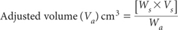
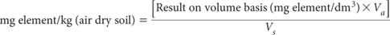

Chapter 18 of Rayment and Higginson (1992) provided two tests for extractable K+. These simple soil fertility tests are retained with the same code numbers. In addition, this chapter provides a selection of other soil tests, brief details of which are summarised in Table 18.1. All of the tests commence with air-dry soil of <2 mm. Each method contains background and application details.
The bicarbonate-extractable P test of Colwell (1963), based on 0.5 M sodium bicarbonate (NaHCO3) at pH 8.5, was in commercial use by the mid-1960s (Fogliati 1967) as an aid to the responsible marketing of fertilisers in New South Wales. The opportunity to obtain an estimate of extractable K+ in the same soil extract was quickly recognised. For example, Colwell and Esdaile (1968) reported that for a wide range of soils, the K+ extracted was highly correlated (r = 0.96) with exchangeable K+ based on an ammonium chloride (NH4Cl) extraction at pH 7.0. Nowadays, this test, sometimes referred to as Colwell–K, is the ‘standard’ diagnostic K test used in Western Australia (Bolland et al. (2002).
Figure 18.1, based on sample median data from inter-laboratory proficiency programs of ASPAC reported from 1993–1997 (e.g. Peverill and Maheswaran 1993; Peverill and Johnstone 1997), shows a strong, linear relationship between soil K+ extracted by this method and by Method 18B1 (4 h extraction with 0.05 M HCl).
Figure 18.1. Comparisons of median values (air-dry) of soil-extractable K+ by Methods 18A1 and 18B1, obtained from inter-laboratory proficiency programs of ASPAC from 1993–1997. Grand median values were 350 and 329 mg K/kg for methods 18A1 and 18B1, respectively.
Table 18.1. Summary detaÕs of method codes, method titles, technologies and notes on miscellaneous tests described in this chapter.
Code |
Technology |
Test method |
Notes |
18A1 |
Empirical test using Colwell P extract (0.5 M NaHCO3 at pH 8.5, 1:100 soil/solution ratio; 16 h), with instrumental analysis of K+. |
Bicarbonate-extractable K+. |
Useful and economical soil K test, where the laboratory is already committed to perform Colwell P extractions. |
18B1 |
Empirical test using 0.05 M HCl extraction (4 h at 1:40 soil/solution ratio) with instrumental analysis of K+. |
Hydrochloric acid-extractable K+. |
Useful and economical soil K+ test, particularly for use on neutral and acidic soils. Unsuitable for use on highly alkaline soils. |
18C1 |
Empirical test for non-exchangeable K+ (boiling 1.0 M HNO3 at initial 1:40 soil/solution ratio; 30 min) with instrumental analysis of K+. |
Boiling 1.0 M nitric acid-extractable K+. |
Provides a measure of non-exchangeable K+ relevant to sugar cane, particularly when grown on neutral and acidic soils. |
18D1 |
Empirical tests for phyto-available soil Cd based on extractions with CaCl2 and subsequent instrumental analysis of Cd. |
0.1 M CaCl2- extractable Cd (2 h extraction at 1:2.5 soil/extract ratio). |
Useful test to predict phyto-available soil Cd, particularly by laboratories without access to ICP-MS. Slightly higher concentrations than from Method 18E1 makes it analytically attractive. |
18E1 |
|
0.01 M CaCl2- extractable Cd (4 h extraction at 1:5 soil/extract ratio). |
Useful test to predict phyto-available soil Cd by laboratories with ICP-MS and when soils are highly weathered (low ionic strength). |
18F1 |
Multi-element empirical test on air-dry soil, with analysis by ICPAES |
Mehlich 3 extractable elements (P, Ca, Mg, Na, K, Fe, Cu, Mn, Zn, B, S, Al). |
Widely used internationally for rapid, cheap, comprehensive soil fertility assessments (cations, macro- and micro-nutrients). |
18F2 |
Part of multi-element empirical test (colorimetric for extractable P). |
Mehlich 3 extractable P – colour finish. |
Optional analytical finish for Mehlich 3 extractable P, for labs without access to ICPAES or when soil P calibrations were based on a colorimetric finish. |
18G1 |
Empirical test for reserve soil K+ by Cu-modified sodium tetraphenylboron extraction, with instrumental analysis of K. |
Reserve soil K+ by Cu-modified sodium tetraphenylboron extraction [TBK4h]. |
An emerging soil test for ‘reserve’ soil K, influenced by ‘incubation time’. This test is based on 4 h ‘incubation’ but there is provision for other times. |
Table 18.2. General ratings from Rayment (2003) for the interpretatŠn of both bicarbonate-extractable K+ and acid-extractable K+ (cmolcK/kg) in air-dry surface soÕs from northern Australia.
Rating |
Value/range |
Very low |
<0.1 |
Low |
0.1–0.2 |
Medium |
>0.2–0.5 |
High |
>0.5–1.0 |
Very high |
>1.0 |
Use of Method 18A1 is justified when comprehensive analysis to assess the ion exchange properties of soils is unavailable or unwarranted and when the test results are known to relate to crop response to applications of potash fertiliser. Examples of soil K fertility ratings are provided in Table 18.2.
Method 18A1 involves the measurement of K+ in clarified extracts of 0.5 M NaHCO3 at pH 8.5, following 16 h extraction, with subsequent analysis by flame photometry, AAS or ICPAES. Alternatively, K+ may be determined by flame FES incorporated into a continuous segmented flow system. Analytically, the wide soil/solution ratio of 1:100 can be a disadvantage when measuring K+ concentrations in extracts from soils low in soluble plus exchangeable K+.
Extracting Solution – 0.5 M Sodium Bicarbonate at pH 8.5
As for Method 9B1.
Li Reagent (for auto flame-photometer)
Dissolve 4.0 g lithium sulfate (Li2SO4.H2O; reagent grade) in deionised water and make volume to 1 L. Add 4 drops of Brij 35 Wetting Agent (see Method 5A2a for preparation details). Add 10 mL/L ammonium hydroxide (NH4OH; 28–30%; reagent grade) for pH control of the reagent to the auto-flame photometer. Specifically, check the pH of the recipient stream on each day of use (universial pH indicator paper is sufficiently accurate for this purpose) and adjust the pH of the Li Reagent so as the pH of the recipient stream is near neutral.
Potassium Primary Standard
1 L contains 500 mg of K+.
Dissolve 0.9534 g potassium chloride (KCl; previously dried at 110°C for 2 h) in deionised water and make to 1.0 L in a volumetric flask. Store in a clean, well-sealed plastic bottle.
Potassium Secondary Standard
1 L contains 100 mg of K+.
Dilute 100 mL K Primary Standard to 500 mL with 0.5 M NaHCO3 at pH 8.5 Extracting Solution in a volumetric flask. Freshly prepare when K Working Standards are required.
Potassium Working Standards
Dispense 0, 1.0, 2.0, 5.0, 10.0, 20.0, 30.0, 40.0 and 50.0 mL K Secondary Standard into separate 500 mL volumetric flasks and make to volume with 0.5 M NaHCO3 at pH 8.5 Extracting Solution. These Working Standards cover the range 0–10 mg K+/L and for a 1:100 soil/solution ratio are equivalent to soil concentrations of 0, 20, 40, 100, … 1000 mg K+/kg. Store in clean, sealed plastic bottles.
Weigh and extract air-dry soil (<2 mm) with 0.5 M NaHCO3 at pH 8.5 as described in Method 9B1, ensuring that apparatus and filter paper (if applicable) are free of K+ contamination/residues.
Analyse for K+ in the clarified aliquots and K Working Standards after acidic dilution (see Note 1) by FES, AAS, or ICPAES, using instrumental procedures similar to those described in Method 15A1.
If an automated flame photometer is available, a neutralisation step with 0.75 M H2SO4 – as shown in Figure 9.4 – is warranted, prior to addition of Li Reagent as an internal standard. A typical continuous segmented-flow manifold for K+ is shown in Figure 15.2.
Report bicarbonate-extractable K+ (mg K+/kg) on an air-dry basis. To convert to cmolcK/kg, divide mg K+/kg by 391.
1. Undiluted 0.5 M NaHCO3 carries a high ‘salt’ burden, often sufficient to extinguish an ICPAES plasma and to cause a build-up of ‘salt’ deposits on the ICPAES torch and on burners during FES and AAS analysis, particularly when large batch-sizes of samples are involved. These effects can be minimised by at least 1+1 dilution with dilute H2SO4 of the clarified extracts and working standards prior to instrumental analysis, so the final diluted extract/working standards are approximately pH neutral. This procedure should be undertaken in a manner that permits the dissipation of CO2 released as a consequence of acidic dilution.
This method is a modification of the procedure developed by Kerr and von Stieglitz (1935, 1938). Soil extraction involves the equilibration for 4 h at 25°C of air-dry soil of <2 mm with 0.05 M HCl at a soil/solution ratio of 1:40. Potassium in the clarified extract is determined by ICPAES, AAS or FES.
This simple test has been used in Queensland for over 50 years (Anon 1965) to indicate the K fertility of surface soils from land use surveys and related purposes. Figure 18.1 shows the linear relationship established between this method and Method 18A1, using soils mainly from Australia. Table 18.2 provides soil fertility ratings applicable to this method.
Extracting Solution (0.05 M HCl)
Add 200 mL 10 M hydrochloric acid (HCl) to deionised water and make volume to 40 L. This extracting solution remains stable for a considerable period when stored in a clean polyethylene container. Confirm molarity in a manner similar to that given in Method 7A1; adjust to the required molarity using the formula given in Method 7A1.
Potassium Primary Standard
1 L contains 500 mg of K+.
Prepare as described in Method 18A1 but dilute to volume with 0.05 M HCl Extracting Solution.
‘Low Strength’ Potassium Working Standards
Initially prepare a 50 mg K/L solution by diluting 50 mL K Primary Standard to 500 mL with 0.05 M HCl Extracting Solution in a volumetric flask. Next dispense 0, 1.0, 2.0, 5.0, 10.0 and 15.0 mL of this Intermediate Solution into separate 100 mL volumetric flasks and make each to volume with 0.05 M HCl. These solutions contain 0, 0.5, 1.0, 2.5 …7.5 mg K+/L and for a 1:40 soil/solution ratio are equivalent to soil concentrations of 0, 20, 40, 100, 200 and 300 mg K+/kg. Store in well-sealed plastic bottles.
‘High Strength’ Potassium Working Standards
Dispense 0, 1.0, 2.0, 3.0, 4.0, 5.0 and 6.0 mL K Primary Standard into separate 100 mL volumetric flasks and make to volume with 0.05 M HCl. These solutions contain 0–30 mg K+/L and for a 1:40 soil/solution ratio are equivalent to soil concentrations of 0, 200 … 1200 mg K+/kg. Store in clean, sealed plastic bottles.
Weigh 5.0 g of air-dry soil (<2 mm) into 250 mL plastic bottles, add 200 mL 0.05 M HCl Extracting Solution and mechanically shake end-over-end for 4 h at 25°C. Centrifuge or filter (Whatman No. 42 – tested K+ free) to obtain soil extracts free of solid particles.
Analyse for K+ in the clarified extracts and appropriate Working Standards by FES, AAS, or ICPAES. Use procedures similar to those described in Method 15A1/18A1.
Report hydrochloric acid-extractable K+ (mg K+/kg) on an air-dry basis. To convert to cmolcK/kg, divide mg K+/kg by 391.
This method for ‘Nitric K’ has been used in the sugar industry of Queensland for several decades (e.g. Chapman (1971)). It is based on the extraction of soil K+ by boiling with 1.0 M nitric acid (HNO3) for 30 min at an initial soil/solution ratio of 1:40 (Haysom 1971). The difference between this measure of fixed K+ and exchangeable K+ equates to non-exchangeable available K+ (Chapman 1971; Martin and Sparks 1985).
Diagnostically, the test estimates easily mineralisable K+ available for crop growth. The values are influenced by soil type and texture and by the addition of sugar-mill by-products such as mill mud and boiler ash. Mean values (units of cmolcK/kg) in surface soils (0–250 mm) monitored by BSES Ltd and reported by Chapman et al. (1981) reveal region to region variability as follows: Mossman–Cairns = 2.1; Babinda–Tully = 2.1; Ingham = 1.7; Burdekin = 2.8; Mackay = 1.3; Bundaberg = 0.9; and Maryborough–Rocky Point = 0.8. Nil or little crop response by Queensland sugar cane to applied K fertiliser is expected when the root zone exceeds 0.6 cmolcK/kg by this test (Anon 1998). As soil extracts are further diluted 1+1 prior to analysis, the final soil/solution ratio is 1:80.
Extracting Solution – 1.0 M HNO3
Dilute 66.67 mL of nitric acid (HNO3, 15 mol/L; high quality) to 1.0 L with deionised water and store in a clean plastic container.
0.5 M HNO3
Dilute the 1 M HNO3 Reagent in the ratio 1+1 with deionised water for preparation of standards. Also use this solution to dilute any over-range sample extracts.
Primary Potassium Standard – Nitric K
1 L contains 391.0 mg K+/L (10.0 mmolcK+/L).
Dissolve 0.7456 g potassium chloride (KCl; previously dried at 110°C for 2 h) in about 300 mL of 0.5 M HNO3 then make to 1.0 L with 0.5 M HNO3.
Working Standards for ICPAES – Nitric K
Pipette 1.0, 2.0, 4.0, 6.0, 8.0 and 10.0 mL of Primary Potassium Standard – Nitric K into clean 200 mL volumetric flasks. Add 100 mL Extracting Solution (1.0 M HNO3) to each volumetric flask and make to 200 mL with deionised water and mix well. These solutions contain 0.05, 0.10, 0.20, 0.30, 0.40 and 0.50 mmolcK/L, which correspond to 1.96, 3.91, 7.82, 11.73, 15.64 and 19.55 mg K+/L. For a final soil/extract ratio of 1:80, these are equivalent to soil concentrations of 0.40, 0.80, 1.60, 2.40, 3.20 and 4.00 cmolcK/kg, or 156.4, 312.8, 625.6, 938.4, 1251.2 and 1564 mg K+/kg. Store in clean, sealed plastic bottles.
Working Standards for Flame Photometer – Nitric K
Pipette 1.0, 2.0, 3.0, 4.0, 5.0 and 6.0 mL of Primary Potassium Standard – Nitric K into clean 200 mL volumetric flasks. Add 100 mL Extracting Solution (1.0 M HNO3) to each volumetric flask and make to 200 mL with deionised water and mix well. These solutions contain 0.05, 0.10, 0.15, 0.20, 0.25 and 0.30 mmolcK/L, which correspond to 1.96, 3.91, 5.87, 7.82, 9.78 and 11.7 mg K+/L. For a final soil/extract ratio of 1:80, these are equivalent to soil concentrations of 0.40, 0.80, 1.60, 2.40, 3.20 and 4.00 cmolcK/kg, or 156.4, 312.8, 469.2, 625.6, 782 and 938.4 mg K+/kg. Store in clean, sealed plastic bottles.
Weigh 2.5 g of air-dry soil (<2 mm) into 250 mL conical flask, graduated at 200 mL. Also bring a suitable laboratory hotplate to operating temperature using a previously checked setting so as to achieve gentle refluxing at 100°C. Add 100 mL of 1.0 M HNO3 Extracting Solution to each conical flask, add two clean glass beads to each flask, and place these on the pre-heated hot plate without delay. Insert a small, clean glass funnel in the neck of each flask, then allow these flasks to reflux gently for 30 min. (Temperature of the extract solution should be maintained as close as possible to 100°C during this period.)
After 30 min of gentle reflux, remove the flasks from the hotplate, then, with minimum delay, rinse and remove the funnels. Encourage rapid cooling to ≈23–25°C by running tap (or cooling) water for 1–2 min or by partly submerging the conical flasks in a cold water bath for a similar time. (Ensure no coolant water contaminantes the contents of the flasks, which should all receive the same attention.)
Dilute the contents of each of the now cooled conical flasks accurately to 200 mL with deionised water and mix well. Next decant a portion of each extract into a suitable centrifuge tube, then centrifuge to clarify the soil extracts prior to instrumental analysis. (It is important to follow boiling and cooling times carefully and to ensure soil extraction conditions are adhered to.)
Analyse for K+ in the clarified aliquots and K Working Standards by ICPAES, by AAS, or by FES, using procedures similar to those described in Method 15A1 or 18A1. Wavelengths for K by ICPAES or AAS = 766.5 nm. Use Working Standards as appropriate.
Report nitric acid-extractable K+ (mg K+/kg) on an air-dry basis. To convert to cmolcK+/kg, divide mg K+/kg by 391.
The occurrence of Itai-Itai disease in Japan, the long half-life of Cd in humans, and evidence that Cd causes kidney damage and other medical conditions in humans are reasons why contamination of soils and the wider environment by Cd has attracted international attention. An additional reason for concern arises because concentrations of Cd in food associated with undesirable accumulations in human tissues, particularly the kidneys, rarely affects the growth and appearance of food plants and animals. Standards that place limits on permitted concentrations (maximum levels) of Cd in the edible portions of various foods have helped in efforts to manage for Cd minimisation (Rayment 1991; Abbott 2007; Warne et al. 2007).
Cadmium is a rare Group IIB heavy metal (67th element in order of abundance). In common with Hg and Zn, Cd readily loses two electrons to form dipositive ions (Aylett 1971), its predominant oxidation state in nature (WHO 1985). Its inorganic chemistry (not its biochemistry) follows closely that of Zn (Fergusson 1990), except that unlike Zn, Cd is insoluble in alkalis (Aylett 1971; 1979).
Within soils, Cd is extensively associated with colloidal and particulate matter, with speciation in oxic-soil solutions confined predominantly to (in decreasing order) free Cd2+, CdSO40 and CdCl1+. In oxic, alkaline soils the predominant water-soluble species are Cd2+, CdCl1+, CdSO40 and CdHCO31+.
The proportion of organically-bound Cd in soil solution, even following sewage sludge addition, is relatively small (Alloway 1990). Moreover, the amounts of electrically neutral CdSO40 and CdCl20 species increase beyond pH 6.5. Adsorption processes rather than precipitation reactions control the distribution of Cd between soil-bound and soluble forms at the concentrations normally encountered in soils, including polluted soils (Alloway 1990). The distribution diagram for Cd/oxy/hydroxide species indicates that most free Cd2+ disappears from aqueous solutions by pH 10.
It is known that the uptake of Cd by vegetables such as Swiss chard and potatoes (Bingham et al. 1983; McLaughlin et al. 1993, 1997) is enhanced by the presence of elevated concentrations of soil and water Cl–. Also, a wide array of soil tests for Cd have emerged, often to provide guidance on the phyto-availability of soil Cd (e.g. Clayton and Tiller 1979; Sposito et al. 1982; Brams and Anthony 1988). The task is challenging, because in addition to Cl–, soil properties such as pH, plus the extent and location of Cd additions from impurities in phosphatic fertilisers, sewage sludge, industrial wastes, etc all influence plant Cd uptake.
European specialists report a preference for CaCl2 as the extractant for routine use in assessing plant-available Cd (and Zn) in soil (Salt and Kloke 1986), although soil/solution ratios, extracting times, and concentrations of CaCl2 vary, the latter commonly from 0.01 M to 0.1 M. Theoretical, practical and analytical reasons account for the various concentrations of CaCl2 selected (e.g. Sauerbeck and Styperek 1985, Novozamsky et al. 1993). Others to report the successful use of dilute solutions of CaCl2, as indicators of Cd phyto-bioavailability across soil types, include Morgan and Alloway (1984), König (1986) and Alloway et al. (1990) for vegetables, and Whitten and Richie (1991) for subterranean clover tops.
This method is based on that of Sauerbeck and Styperek (1985) and Smilde et al (1992). It involves extraction of air-dry soil with 0.1 M CaC12 for 2 h at a soil/solution ratio of 1:2.5, with subsequent instrumental analysis for Cd by ICP-MS (preferred) or graphite furnace, or by ICPAES when solution concentrations are expected to exceed ≈0.05 mg Cd/L. Analytical attributes of the method include: (i) it extracts similar forms but higher amounts of Cd than more-dilute solutions of CaCl2 under otherwise similar conditions, simplifying the subsequent analytical measurement of Cd; (ii) higher amounts of Cd in soil extracts minimise the consequences of accidental contamination in the laboratory, and (iii) it has been shown to be a useful predictor of Cd concentrations in edible plant tissues in Europe (Sauerbeck and Styperek 1985) and in commercially grown vegetables from Queensland (Rayment 1994). Expect concentrations (mg Cd/kg air-dry) in ‘normal’ horticultural soils to average around 0.032 ± 0.028 at 0–100 mm and 0.019 ± 0.016 at 200–300 mm (n ≈190; Rayment 1994), while values of at least 2.5 mg Cd/kg have been obtained from contaminated soils (Sauerbeck and Styperek 1985). Total and extractable levels of Cd commonly decline with increasing soil depth (e.g. Williams and David 1973; Pierce et al. 1982; Rayment et al. 1997).
0.1 M CaCl2 Extracting Solution
Dissolve 14.70 g calcium chloride (CaCl2.2H2O) and make to 1.0 L with high-purity water (DDW). Store in a clean (Cd-free), covered plastic container.
2% Nitric Acid
Dilute 20 mL of nitric acid (HNO3, 15 mol/L; high quality or distilled) to 1.0 L with DDW and mix well. Store in a clean (Cd-free), covered plastic container.
Cadmium Primary Standard
1 L contains 100 mg of Cd.
Dilute a certified, multi-element standard containing Cd (and often other metals) or dissolve 0.2282 g high grade cadmium sulfate (3CdSO4.8H2O) and make volume to 1.0 L with DDW and 2% Nitric Acid in the proportion 1+4 in an acid-cleaned and rinsed borosilicate volumetric flask. Store in a clean polypropylene reagent bottle.
Cadmium Secondary Standard
1 L contains 2 mg of Cd.
Dilute 10.0 mL Cd Primary Standard, while swirling/stirring, to 500 mL with 0.1 M CaC12 Extracting Solution–2% Nitric Acid in the proportion 1+4. The borosilicate volumetric flasks should be acid-cleaned and rinsed before use. This solution is best prepared each time working standards are required but may be stored for up to 2 months if necessary.
Cadmium Working Standards
Using a combination of a calibrated digital burette and a calibrated burette, add 0.2, 0.4, 2.0, 3.0, 4.0, 10.0, 20.0, 40.0, 60.0, 80.0 and 100.0 mL Cd Secondary Standard to separate 200 mL volumetric flasks and make to volume with 0.1M CaCl2 Extracting Solution–2% Nitric Acid in the proportion 1+4. The borosilicate volumetric flasks should be acid-cleaned and rinsed before use. These working standards contain Cd concentrations of 0.002, 0.004, 0.02, 0.04, 0.10, 0.20 ... 0.8 and 1.0 mg Cd/L. For a 1:2.5 soil/extract ratio, these correspond to soil concentrations of 0.005, 0.01, 0.05, 0.10, 0.25, 0.5 ... 2.0 and 2.5 mg Cd/kg. Store in clean polypropylene reagent bottles and use within one month.
10 μg/L Mix v Tuning Solution (for ICP-MS analysis)
Weigh 0.500 g of multi-element Analytika standard (or equivalent) (10 mg/L Ba, Be, Bi, Ce, Co, In, Li, Ni, Pb and U) into a clean 500 mL polypropylene bottle, add 10 mL HNO3, (15 mol/L; high quality) while mixing, and then make to 500.0 g with DDW.
Tellurium Internal Standard (for ICP-MS analysis)
Initially prepare a Te Solution containing 10 mg Te/L by pipetting 10 mL of a commercially obtained 1000 mg Te/L Standard. Add 20 mL distilled HNO3 (15 mol/L), mix well then make to 1.0 L with DDW. This solution may be stored for up to 12 months. Next weigh into a clean 500 mL polypropylene bottle 3.50 g of this 10 mg Te/L Solution, add 10 mL of HNO3 (15 mol/L; high quality), mix well and make to 500 g with DDW. This solution may be stored for up to 2 months.
Matrix modifier (1.2% w/v ammonium dihydrogen orthophosphate) (for Graphite Furnace AAS) Dissolve 1.2 g of NH4H2PO4 in water and dilute to 100 mL.
The sieves, other apparatus, glassware and filter papers used for soil preparation, soil extractions, filtration and instrumental analysis should be acid washed (e.g. 10% v/v HNO3/DDW) and rinsed with DDW before use. Occasional tests should also be made to ensure all sample bags, equipment and the DDW contain no measurable Cd contamination. See Notes 1 and 2 for more details.
Dry soil samples in a clean, dust-free environment, ideally in a Class 1000 Clean Room or within a Class 100 Laminar Flow Hood. When air-dry (40–45°C max.), crush/mill the soil to <2 mm in a stainless steel mill and store in sealed, uncontaminated containers.
Subsequently, weigh 20.0 g of air-dry soil into clean, dry, 100 mL, wide-neck polyethylene flasks, then add 50 mL 0.1 M CaCl2 Extracting Solution to each, stopper, then mechanically shake end-over-end for 2.0 h at around 22–25°C. After shaking, allow solutions to stand for ≈15 min. Centrifuge in 10 mL centrifuge tubes (subsequently remove any floating material by vacuum tube) or filter (e.g. Whatman No. 542) prior to instrumental analysis by ICP-MS (preferred) or GFAAS. Only use ICPAES if elevated concentrations are expected. Refer to Note 3 for guidance on how to store and how long the extracts can be held before instrumental analysis. Follow manufacturer’s recommendations with respect to instrument parameters. A reagent blank should also be measured and adjustments made as necessary. Also, dilute any over-range samples with extracting solution.
For determination of Cd by ICP-MS, initially check for instrument response/performance, using the 10 μg/L Mix v Tuning Solution. All instrument performance criteria should be confirmed at this point. Next dilute 2 mL of each clarified soil extract solution with 8 mL of 2% HNO3 into a 10 mL polyethylene centrifuge tube. Cap and shake and make allowance for this dilution when calculating results. Mix the Tellurium Internal Standard (this is to compensate for drift and matrix effects) with each standard and diluted sample extract in the proportion 0.42 mL/min of Te Internal Standard to 0.6 mL/min of diluted sample extract during operation of the ICP-MS. Also, check a reference solution every 10 samples and recalibrate if drift exceeds 10%. If analyte concentration exceeds the standard calibration range, dilute the clarified soil extracts with calibration blank and repeat relevant determinations. The optimum batch size (samples, including checks) is ≈48–50.
For ICPAES, noting that this technology lacks sensitivity at low Cd concentrations, the preferred wave length is either 226.5 nm or 361.05 nm, with no interference to Cd from Fe and Al expected. For GFAAS, the preferred wave length is 228.8 nm. Also for a Perkin ElmerTM 4100ZL GFAAS, use a sample volume of 20 μL (normal) or 10 μL or 5 μL (if calibration limit is exceeded) together with a Matrix Modifier (5 μL of 1.2% w/v ammonium dihydrogen orthophosphate).
Determine Cd concentrations of sample extracts directly or from a graph (or from a regression equation), taking account of any dilutions.
Report 0.1 M CaC12-extractable Cd as mg Cd/kg on an air-dry soil basis.
1. (a) As recommended by Murphy (1976), stoppers and tubing made of rubber and PVC should be avoided, as these are ‘dirty’ with respect to trace metal impurities.
(b) To clean glassware and plastic-ware, initially soak for about 2 days in 2% Decon, a non-ionic detergent. Afterwards, rinse with DDW, then soak in a 10% v/v HNO3/DDW solution for up to 7 days, followed by rinsing. Soaking-baths must be replenished periodically with relevant solutions. When the apparatus is dry and/or when not required for immediate use, store in clean, sealed, polyethylene bags, or invert on a polyethylene sheet in a dust-free cupboard. If laboratory-ware is known to contain insignificant Cd contamination due to prior use, the prescribed cleaning procedures may be expedited but not overlooked. Periodically monitor the effectiveness of these measures via the use of blanks and quality-control reference samples.
(c) Periodically tests the purity of the DDW using electrical conductivity (this should be ≤0.5 mS/m) and the dithizone test of Stout and Arnon (1939). Key points of the dithizone test are:
• Prepare dithizone reagent by dissolving 100 mg high-grade diphenylthiocarbazone in 10 mL of redistilled chloroform. Store this stock solution in metal free glassware and a sub-volume in a clean dropping bottle. [Since chloroform reacts slowly with oxygen/oxidizing agents to form phosgene, chlorine, and HCl, particularly when exposed to light and air (Riddick and Toops 1955), it must be stabilised if lengthy storage is envisaged. This can be achieved by adding 0.5–1.0% of redistilled ethanol.]
• Prepare a separating funnel by dispensing into it (in a fume cupboard) in about 1.0 mL DDW, 5 mL of redistilled chloroform, 5 drops of 6 M NH4OH and 3 drops of dithizone reagent, followed by vigorously shaking by inverting at regular intervals for 1 min or more. Next allow the chloroform layer to settle out (any build up of vapour must be released periodically through the stop-cock during shaking). (Prepare the 6 M NH4OH solution by diluting high purity NH4OH reagent with DDW.)
• Drain the chloroform layer to waste and retain the dithizone contained in the ammoniacal water in the separating funnel.
• Add 200 mL of the water to be tested and 5 mL of chloroform into the separating funnel containing the purified dithizone, shake vigorously for 1 min or more, then allow the chloroform layer to settle out. Any red or purple colour indicates the presence of one or more of the following metals: Zn, Cu, Pb, Ni, Co, Hg, Cd, Tl, Bi. For precise studies, confirm the presence or absence of Cd (and any other metals of interest) by scanning the concentrated aqueous dithizone extract on an ICP at recommended wave lengths for these metals. If there is no response when the ICP is operated at maximum sensitivity, the relevant metal can be assumed to be absent for the purposes of this soil test. A larger volume of water may be tested if more accuracy is thought necessary.
(d) Occasionally test for the presence of heavy metal contamination on the surface of items such as plastic tubing, gloves, etc with a few drops of the dithizone reagent. The formation of a red or purple colour indicates undesirable heavy metal contamination. If the dithizone’s colour is too intense, a sub-sample can be diluted before use with redistilled chloroform. Replace or decontaminate items if evidence of significant contamination is apparent.
2. Patterson and Settle (1976) recommend use of laboratory ware made of teflon, ultra-pure quartz and conventional polyethylene in preference to conventional borosilicate glass, polycarbonate, methacrylate, linear polyethylene, polypropylene, nylon, PVC, and platinum.
3. The 2% HNO3 solution is used to help stabilise the Cd Standard Solutions. At the final concentration, there is insufficient matrix effect to require 2% HNO3 (1+4) addition to unknown extract solutions (A Jeffrey, pers. comm.). According to Dr Sauerbeck (pers. comm.), the particulate-free soil extracts may be held for up to 10 days at 5°C if rapid analysis is not immediately possible. Re-extract if ‘flakes’ should form on the surface of these extract solutions during this period of delay.
See the preamble to Method 18D1 for relevant information on the inorganic and biological chemistry of Cd, including reasons why its measurement in soils has attracted international interest. That preamble also included information on many extractants used to assess the phyto-availability of Cd and other heavy metal pollutants of soils (Beckett 1989).
This method is similar to that of Method 18D1 but is sufficiently different to prevent the direct interchange of results. Specifically, it uses more dilute calcium chloride (0.01 M CaCl2 cf. 0.1 M CaCl2), a longer extraction time (4 h cf. 2 h) and a wider soil/solution ratio (1:5 cf. 1:2.5).
One reason given by Novozamsky et al. (1993) for preferring 0.01 M CaCl2 (1:10 soil/solution ratio) was that its concentration was ‘more or less the same salt concentration as the average soil solution’. Whitten and Ritchie (1991) also used 0.01 M CaCl2 but at a soil/solution ratio of 1:5. Milham et al. (2004) have modelled the effects of soil properties on the concentration of Cd extracted by 0.01 M CaCl2 from soils of the Sydney Basin, while Loganathan and Hedley (1997) used soil extraction with 0.01 M CaCl2 to study the downward movement of Cd and P from phosphatic fertilisers in a New Zealand pasture.
This method was used by Barry et al. (2006) to monitor the phyto-bioavailability of Cd from land-applied bio-solids and metal salts in several Queensland cropping systems. Preferred instrumental analysis of clarified extracts involves ICP-MS or GFAAS. See Fraser et al. (1986), if the laboratory has access to atom-trapping AAS, which has high sensitivity and is relatively free from Cl– matrix interferences. The PQL of this method (30 times the standard deviation of analyte concentration in 10 blank solutions) = 0.001 mg Cd/kg, while recovery of Cd added to clarified soil extracts spiked with 0.5 μg Cd/L approximates 100% (A Jeffrey, pers.comm.).
0.01 M CaCl2 Extracting Solution
Dissolve 1.47 g calcium chloride (CaCl2.2H2O) and make to 1.0 L with high-purity double deionised water (DDW). Store in a clean (Cd-free), covered plastic container.
2% Nitric Acid
As for Method 18D1.
Cadmium Primary Standard
1 L contains 50 mg of Cd.
Dilute a certified multi-element standard containing Cd (and often other metals) or dissolve 0.1141 g high grade cadmium sulfate (3CdSO4.8H2O) and make volume to 1.0 L with DDW and 2% Nitric Acid in the proportion 1+4 in an acid-cleaned and rinsed borosilicate volumetric flask. Store in a clean polypropylene reagent bottle.
Cadmium Secondary Standard
1 L contains 1.0 mg of Cd.
Dilute 10.0 mL Cd Primary Standard, while swirling/stirring, to 500 mL with 0.01 M CaC12 Extracting Solution–2% Nitric Acid in the proportion 1+4. The borosilicate volumetric flasks should be acid-cleaned and rinsed before use. This solution is best prepared each time working standards are required but may be stored for up to 2 months.
Cadmium Working Standards
Accurately add, for example, 0.08, 0.6, 2.0, 4.0, 8.0, 16.0, 30.0, 60.0 and 100.0 mL of Cd Secondary Standard to separate 200 mL volumetric flasks and make to volume with 0.01 M CaCl2 Extracting Solution–2% Nitric Acid in the proportion 1+4. The borosilicate volumetric flasks should be acid-cleaned and rinsed before use. These working standards contain Cd concentrations of 0.0004, 0.003, 0.010, 0.020, 0.040, 0.080, 0.15, 0.30 and 0.50 mg Cd/L. For a 1:5 soil/extract ratio these correspond to soil concentrations of 0.002, 0.015, 0.050, 0.10, 0.20, 0.40, 0.75, 1.5 and 2.5 mg Cd/kg. Store in clean polypropylene reagent bottles and use within one month.
10 μg/L Mix v Tuning Solution (for ICP-MS analysis)
As for Method 18D1.
Tellurium Internal Standard (for ICP-MS analysis)
As for Method 18D1.
Matrix modifier (1.2% w/v ammonium dihydrogen orthophosphate) (for GFAAS)
As for Method 18D1.
As for Method 18D1, ensure sieves, other apparatus, glassware and filter papers used for soil preparation, soil extractions, filtration and instrumental analysis contain no measurable Cd contamination. Employ acid washing and other preparative steps outlined in Method 18D1; see Notes 1 and 2 of Method 18D1 for more details.
Dry soil samples in a clean, dust-free environment, ideally in a Class 1000 Clean Room or within a Class 100 Laminar Flow Hood. When air-dry (40–45°C max), crush/mill the soil to <2 mm and store in sealed, uncontaminated containers. A stainless steel mill is suitable, provided no Cd is introduced.
Subsequently, weigh 5.0 ± 0.01 g of air-dry soil into clean, dry 50 mL centrifuge tube or similar, then add 25.0 mL 0.01 M CaCl2 Extracting Solution to each, stopper, then mechanically shake end-over-end for 4.0 h at around 22–25°C. After shaking, allow solutions to stand for ≈15 min. Centrifuge in 10 mL centrifuge tubes (subsequently remove any floating material by vacuum tube) or filter (e.g. Whatman No. 542) prior to instrumental analysis by ICP-MS (preferred) or GFAAS. Only use ICPAES if elevated concentrations are expected. Follow manufacturer’s recommendations with respect to instrument parameters. A reagent blank should also be measured and adjustments made as necessary. Also, dilute any over-range samples with 0.01 M CaC12 Extracting Solution.
For determination of Cd by ICP-MS, initially check for instrument response/performance, using the 10 μg/L Mix v Tuning Solution. All instrument performance criteria should be confirmed at this point. Next dilute 2 mL of each clarified soil extract solution with 8 mL of 2% HNO3 into a 10 mL polyethylene centrifuge tube. Cap and shake and make allowance for this dilution when calculating results. Mix the Tellurium Internal Standard (this is to compensate for drift and matrix effects) with each standard and diluted sample extract in the proportion 0.42 mL/min of Te Internal Standard to 0.6 mL/min of diluted sample extract during operation of the ICP-MS. Also, check a reference solution every 10 samples and recalibrate if drift exceeds 10%. If analyte concentration exceeds the standard calibration range, dilute the clarified soil extracts with calibration blank and repeat relevant determinations. The optimum batch size (samples, including checks) is ≈48–50.
For ICPAES, noting that this technology lacks sensitivity at low Cd concentrations, the preferred wave length is either 226.5 nm or 361.05 nm, with no interference to Cd from Fe and Al expected. For GFAAS, the preferred wave length is 228.8 nm. Also for a Perkin ElmerTM 4100ZL GFAAS, use a sample volume of 20 μL (normal) or 10 μL or 5 μL (if calibration limit is exceeded) together with a Matrix Modifier (1.2% w/v ammonium dihydrogen orthophosphate) volume of 5 μL.
Determine Cd concentrations of sample extracts directly or from a graph (or from a regression equation), taking account of any dilutions.
Report 0.01 M CaC12-extractable Cd as mg Cd/kg on an air-dry soil basis.
This multi-element test (Mehlich 1984) covers extractable P, the basic exchangeable cations (Ca2+, Mg2+, Na+, K+), extractable S, selected trace elements (Cu, Mn, Zn, B), extractable Fe and extractable Al. Environmental soil P tests (Bloesch and Rayment 2006) that can be derived from components obtained from Mehlich 3, specifically Mehlich 3–P saturation ratios, are documented in Chapter 9 as Method 9K1a [Mehlich 3–P Saturation Ratio (M3PSRcolourP)] and as Method 9K1b [Mehlich 3–P Saturation Ratio (M3PSRICPAES)].
The main function of the extractant’s components are (Anon 2007): CH3COOH – buffers the extracting solution to pH 2.5 when all reagents are added and mixed, thus preventing Ca2+ from being precipitated as calcium fluoride; NH4NO3 – facilitates extraction of the exchangeable cations Ca2+, Mg2+, Na+ and K+, since it reacts with the CH3COOH to form ammonium acetate; HNO3 – extracts a portion of calcium phosphates, while its H+ component aids the extraction of basic and micronutrient cations; NH4F – the F– component helps to extract Fe and Al phosphates, while NH4+ complements NH4NO3 in extracting basic cations; and EDTA – chelates micronutrients (particularly Cu) and prevents precipitation of calcium fluoride.
The Mehlich 3 extractant has applicability for diagnostic purposes across a wide assortment of soils ranging in reaction from acidic to basic (Jones Jr. 1990). It is used widely in North America and increasingly in other countries, including the Czech Republic (Zbíral and Nmec 2000) and Australia (Bolland et al. 2002; Rayment 2004). Rayment et al. (2009) have summarised the analytical performance of Australasian soil testing laboratories relative to North American laboratories for a suite of Mehlich 3 soil tests on four soils from North America.
In practice, the Mehlich 3 test utilises a 1:10 v/v soil-solution ratio or a 1:10 w/v ratio, inclusive of vigorous shaking for 5 min at 200 × 4 cm reciprocations/min (or equivalent), followed by measurement of a range of elements in the subsequent soil-free extract. It is a rapid, empirical method that offers low soil testing costs by replacing at least three ‘traditional’ soil tests.
Across Australasia, method comparisons and field calibration studies with Mehlich 3 mostly involve a 1:10 w/v soil-solution ratio, as in this procedure. This reflects local practice for many empirical soil tests. One reason is that the particle size distribution of a wide selection of dry, ground (or crushed) Australian soils of <2 mm can vary considerably, contributing to variability in weights of equal volumes of sub-samples. The US Department of Agriculture (Burt 2004) and Canadians’ Sen Tran and Simard (1993) also specify a w/v soil/solution ratio of 1:10. Approximate results for a v/v soil/solution ratio can be calculated using a weight-volume conversion calculation for each sample.
Nowadays, the most convenient ‘analytical finish’ for all analytes in 1:10 w/v Mehlich 3 extracts of soil involves ICPAES, although other analytical ‘finishes’ are used. Expect little difference when AAS is used for soil cations and nutrient heavy metals, provided possible ionisation interference is suppressed with lanthanum solution or similar. In the case of P, expect the Murphy and Riley (1962) analytical finish to yield from zero to >20% lower results than corresponding values obtained from ICPAES (Pierzynski et al. 2005; Sikora et al. 2005).
There have been many studies comparing results obtained from Mehlich 3 and more ‘traditional’ soil chemical tests (e.g. Sims 1989; Anon 2000; Bolland et al. 2003). The summarised findings provided derive from a wide cross-section of fertilised soils from cropped areas of sub-tropical and tropical eastern Australia [Rayment and Bloesch (2006) and unpublished data of Rayment, Bloesch, Lyons and Islam]:
(a) Extractable P: Mehlich 3 lacks good one to one relationships with Colwell P and acid-extractable P (Method 9B and Method 9G, respectively). When soil P fertility rankings were compared, however, Mehlich 3 correctly predicted the expected responsiveness to fertiliser P of ≥70% of over 100 sugar cane sites (relative to method 9G), although the amount of P extracted was always lower. Results for Colwell P (Method 9B) were sometimes lower and sometimes higher than Mehlich 3–P. The Mehlich 3–P test had the highest correlation with 0.005 M CaCl2-extractable P (Method 9F), which is known to reflect soil solution P concentration. Correlation coefficients (r) with Method 9F were 0.65, 0.47 and 0.45 for Mehlich 3–P, acid-extractable P, and Colwell P, respectively.
(b) Cations: Excellent correlations with traditional tests utilising unbuffered NH4+ as the exchange cation (e.g. Method 15A1), particularly for acidic and neutral soils.
(c) Micronutrients: Reasonable correlations with DTPA-extractable Cu and Zn (Method 12A1). For DTPA Mn there were two relationships based on pH. The correlation was reasonable when soil pH was <6.5. For DTPA Fe, there appears to be a good core relationship but the number of outliers resulted in a mediocre net relationship. Generally, Mehlich 3 extracted higher concentrations of micronutrients, particularly Cu and Fe, probably because of the higher acidity of the extracting solution. The relationship with hot CaCl2- extractable B (Method 12C2) was acceptable, while Taber (2004) reported useful relationships between Mehlich 3 extractable B and the ‘traditional’ hot water method for soil B.
(d) Extractable S: Excellent correlation with Method 10B3.
Mehlich 3 Extracting Solution – (0.2 M CH3COOH + 0.25 M NH4NO3 + 0.015 M NH4F + 0.013 M HNO3 + 0.001 M EDTA)
M3-Solution A: Using analytical grade chemicals, prepare an ammonium fluoride (NH4F)/ethylene diamine tetra acetic acid (EDTA) {[CH2.N(CH2.COOH)2]2} solution by dissolving 69.45 g NH4F and then 36.525 g EDTA in 300 mL of high quality reverse osmosis deionised water then dilute to 500 mL.
Final Mehlich 3 Extracting Solution: For each 1.0 L and using analytical grade chemicals, dissolve 20.0 g ammonium nitrate (NH4NO3) in around 600 mL of deionised water, add 4.0 mL of M3-Solution A, mix well, then add the equivalent of 11.5 mL of glacial (17 M) acetic acid (CH3OOH) and the equivalent of 0.87 mL of 15 M nitric acid (HNO3), mix well and bring to volume with deionised water. The final pH should be 2.5 ± 0.1. This extracting solution remains stable for several weeks if kept covered and stored at ambient laboratory conditions.
Mixed Mn, P and S Primary Standard
1 L contains 1000 mg of Mn, P and S.
Preferably prepare from commercially available single element concentrates. If not available, it is possible to prepare from analytical grade salts as described here-in. As Mixed Working Standards are to be prepared that contain all elements over the concentration ranges of interest, sulfates of Mn, Cu, Fe and Zn should be avoided. Otherwise a separate set of Working Standards would be needed for these trace elements. For these elements, single element concentrates are recommended to keep the number of Working Standards to a more efficient and practical number, particularly for instruments that do a complete calibration of standards at the start of each batch of samples. Avoid storing standards in boroslilcate glass as Mehlich 3 Extracting Solution can extract B from the glass. Store Primary Standards in a clean plastic container. Primary Standards can be prepared in borosilicate glass volumetric flasks provided contact time with Mehlich 3 Extracting Solution is kept to a minimum: Nalgene volumetric flasks are preferred.
Using a calibrated pipette, transfer 100 mL of a single element 10 000 mg/L Mn concentrate into a 1000 mL volumetric flask. Weigh 4.2636 g di-ammonium-hydrogen phosphate and transfer to the volumetric flask. Add ≈300 mL Mehlich 3 Extracting Solution to dissolve. Into a separate beaker/flask add 4.122 g ammonium sulfate and dissolve in ≈400 mL of Mehlich 3 Extracting Solution. Transfer ammonium sulfate solution to the 1000 mL volumetric flask. Make volume to 1000 mL with Mehlich 3 Extracting Solution and mix. This Primary Standard remains stable for 1–2 months and is preferable to store cool (≈4°C) in the dark.
Calcium Primary Standard
1 L contains 10 000 mg of Ca2+.
Use a single element (10 000 mg Ca/L) concentrate or prepare from analytical grade salt as follows: Weigh 24.972 g of CaCO3 (previously dried at 105°C to constant weight) and transfer to a 1000 mL volumetric flask containing 100 mL of deionised water and 20 mL of 15 M HNO3. Dissolve and make to volume with Mehlich 3 Extracting Solution.
Mixed Mg2+, Na+, K+ and Fe Primary Standard
1 L contains 1000 mg of Mg2+, Na+, K+ and Fe.
Using a calibrated pipette, transfer 100 mL of a single element 10 000 mg Fe/L concentrate into a 1000 mL volumetric flask. Do the same for single element concentrates of Mg2+, Na+ and K+ (if available). If not available, add 20 mL of 15 M HNO3 to the volumetric flask, then add 1.6578 g of MgO (previously heated in a muffle furnace at 600–700°C for 2 h), 2.542 g of NaCl and 1.9086 g of KCl, pre-dried as described elsewhere in this volume. Stopper and swirl the contents vigorously until the solids are completely dissolved, then make to 1000 mL with Mehlich 3 Extracting Solution.
Aluminium Primary Standard
1 L contains 2000 mg of Al.
Using a calibrated pipette, transfer 100 mL of a single element 10 000 mg Al/L concentrate into a 500 mL volumetric flask. Make volume to 500 mL with Mehlich 3 Extracting Solution.
Boron Primary Standard
1 L contains 1000 mg of B.
Using a calibrated pipette, transfer 100 mL of a single element 10 000 mg B/L concentrate into a 1000 mL volumetric flask. Mix and make to volume with Mehlich 3 Extracting Solution. Alternatively purchase a 1000 mg B/L single element concentrate. Otherwise, weigh 5.7280 g of dry boric acid (H3BO3) and transfer to a 1000 mL volumetric flask. Dissolve in 900 mL Mehlich 3 Extracting Solution and then make to volume with Mehlich 3 Extracting Solution.
Copper Primary Standard
1 L contains 1000 mg of Cu.
Using a calibrated pipette, transfer 100 mL of a single element 10 000 mg Cu/L concentrate into a 1000 mL volumetric flask. Mix and make to volume with Mehlich 3 Extracting Solution.
Zinc Primary Standard
1 L contains 1000 mg of Zn.
Using a calibrated pipette, transfer 100 mL of a single element 10 000 mg Zn/L concentrate into a 1000 mL volumetric flask. Mix and make to volume with Mehlich 3 Extracting Solution.
Mixed B, Cu and Zn Intermediate Standard
1 L contains 40 mg of B, 100 mg of Cu and 200 mg of Zn.
Pipette 20 mL of B Primary Standard (1000 mg B/L), 50 mL of Cu Primary Standard (1000 mg Cu/L) and 100 mL of Zn Primary Standard (1000 mg Zn/L) into a single 500 mL volumetric flask. Mix and make to volume using Mehlich 3 Extracting Solution.
Working Standards – Mehlich 3
Refer to Table 18.3 for details on how to prepare these Working Standards using relevant Primary and Intermediate Standards.
Weigh 4.0 ± 0.01 g of air-dry soil (<2 mm) into 50 mL (centrifuge) extraction tubes (or other suitable extraction bottle) and add 40.0 mL of (final) Mehlich 3 Extracting Solution. Stopper and mechanically shake (end-over-end, or on a reciprocating shaker operating with ≈200 × 4 cm reciprocations/min) for 5 min at ≈25°C. Quickly following this step, separate soil from the extracting solution by centrifugation or by filtering (Whatman No. 1 (or equivalent) filter paper, 11 cm) prior to analysis by ICPAES, using wavelengths as recommended in Table 18.4.
Determine concentrations of Mehlich 3 extractable elements in the soil extracts directly (mg element/kg) from calibration standards run on commencement, during the ‘run’, and on completion. Dilute soil extracts of high concentrations with Mehlich 3 Extracting Solution, which also serves as the zero working standard.
Report Mehlich 3 extractable elements as mg element/kg on an air-dry basis. The derived environmental parameters for P described in Chapter 9 are reported as index values, also on an air-dry soil basis.
Only if particularly requested, report Mehlich 3 elemental results as mg element/dm3 on an air-dry basis or multiply by 2 to obtain an estimate of mg P/ha for a 20 cm soil depth. This requires the use of a weight-volume factor: see Note 3.
Table 18.3. Volumes of specified Mehlich 3 Primary and Intermediate Standards used to prepare Mixed Working Standards† WS 1 to WS 6.
(a) Volumes of Mehlich 3 Primary or Intermediate Standard (mL), quantitatively added and dÕuted to 1000 mL using the Final Mehlich 3 Extracting SolutŠn.
Standard (mg/L) |
WS 1†† |
WS 2 |
WS 3 |
WS 4 |
WS 5 |
WS 6 |
Primary Standard††† |
||||||
Mixed P, S, Mn (1000) |
0 |
2 |
5 |
10 |
20 |
50 |
Ca2+ (10 000) |
0 |
4 |
10 |
20 |
40 |
100 |
Mixed Mg2+, Na+, K+, Fe (1000) |
0 |
4 |
10 |
20 |
40 |
100 |
Al (2000) |
0 |
4 |
10 |
20 |
40 |
100 |
Intermediate Standard††† |
||||||
Mixed B (40), Cu (100) and Zn (200) |
0 |
2.5 |
5 |
10 |
25 |
50 |
(b) Analyte concentratŠns in Mehlich 3 Working Standards.
|
WS 1 |
WS 2 |
WS 3 |
WS 4 |
WS 5 |
WS 6 |
Element/s |
(mg/L) |
|||||
P, S, Mn |
0 |
2 |
5 |
10 |
20 |
50 |
Ca2+ |
0 |
40 |
100 |
200 |
400 |
1000 |
Mg2+, Na+, K+; Fe |
0 |
4 |
10 |
20 |
40 |
100 |
Al |
0 |
8 |
20 |
40 |
80 |
200 |
B |
0 |
0.1 |
0.2 |
0.4 |
1 |
2 |
Cu |
0 |
0.25 |
0.5 |
1 |
2.5 |
5 |
Zn |
0 |
0.5 |
1 |
2 |
5 |
10 |
(c) Mehlich 3 soÕ equivalent concentratŠns of Working Standards
|
WS 1 |
WS 2 |
WS 3 |
WS 4 |
WS 5 |
WS 6 |
Element/s |
(mg element/kg air-dry soil) |
|||||
P, S, Mn |
0 |
20 |
50 |
100 |
200 |
500 |
Ca2+ |
0 |
400 |
1000 |
2000 |
4000 |
10 000 |
Mg2+, Na+, K+; Fe |
0 |
40 |
100 |
200 |
400 |
1000 |
Al |
0 |
80 |
200 |
400 |
800 |
2000 |
B |
0 |
1 |
2 |
4 |
10 |
20 |
Cu |
0 |
2.5 |
5 |
10 |
25 |
50 |
Zn |
0 |
5 |
10 |
20 |
50 |
100 |
†Use pre-cleaned borosÕicate volumetric flasks then store in pre-cleaned, labelled and dated polypropylene reagent bottles.
††WS 1 is calibratŠn blank.
†††Mixed Primary or Intermediate Standard of the specified elements.
Table 18.4. Examples of analytical wavelengths used for Mehlich 3 elemental determinatŠns using a radial mode ICPAES (axial mode ICPAES in brackets).
Element |
Wavelength (nm) |
Element |
Wavelength (nm) |
P |
213.618 (178.221) |
S |
181.972 |
Ca |
430.253 (315.887) |
Mg |
285.213 (280.271) |
Na |
589.592 |
K |
766.491 |
B |
249.772 |
Cu |
324.754 |
Fe |
259.940 |
Mn |
257.610 (260.570) |
Zn |
213.857 |
Al |
394.401 (308.215) |
1. High quality reverse osmosis deionised water that contains inconsequential traces of soluble OM matter is preferred for the preparation of reagents and standard solutions. This equates to ASTM Type 1 grade of reagent water. Distilled water is an alternative for the Sulfuric-Molybdate-Tartrate Solution A used in the procedure for the colorimetric determination of P in Method 18F2.
2. The air-dry soil weight of 4.0 ± 0.01 g is the minimum recommended. More soil can be used (e.g. 5.0 g) but the size of the extraction tube/bottle and the volume of (final) Mehlich 3 Extracting Solution should be increased pro rata to maintain the 1:10 soil/extractant ratio. Always ensure there is sufficient air space (≈20%) to permit effective mixing of contents.
3. When a volume of soil (Mehlich 1972) rather than a weight of soil is used, the weight/volume relationship of all samples needs to be known in order to convert results to a mass basis. To determine this relationship, weigh (to the nearest 0.01 g) three or four replications of a known volume Vs (e.g. 4.0 cm3) of each air-dry soil. Next calculate and record the average soil weight (Wa) for the scoop used for each sample separately. Assuming the scoop volume Vs is 4.0 cm3 and the specified weight (Ws) is 4.0 g, the adjusted volume (Va) to give the mass of sample is calculated as:

The approximate result for a 1:10 soil/solution ratio, expressed on a mass basis can then be calculated as:

Method 18F1 provides most details on the use of Mehlich 3 as an extractant for P (Mehlich 3–P) and other elements. This method provides an alternative analytical finish for P for those laboratories without access to ICPAES instrumentation, or who need to rely on diagnostic criteria developed colorimetrically.
The molybdophosphic blue color procedure of Murphy and Riley (1962), as modified by Watanabe and Olsen (1965) and as outlined by Anon (2000), is the preferred colorimetric analytical finish for Mehlich 3–P. Based on median results from North American Proficiency Testing and from other studies, expect results by the Murphy and Riley (1962) analytical finish to be from zero to >20% lower than corresponding values obtained from the ICPAES analytical finish. Soil concentrations equivalent to 1–400 kg P/ha can usually be measured without dilution with Mehlich 3 Extracting Solution. Notes 1, 2 and 3 of Method 18F1 are equally relevant to this method.
Mehlich 3 Extracting Solution (0.2 M CH3COOH + 0.25 M NH4NO3 + 0.015 M NH4F + 0.013 M HNO3 + 0.001 M EDTA)
Prepare and store as per Method 18F1.
Sulfuric-Molybdate-Tartrate Solution A
Dissolve 50.0 g AR grade ammonium molybdate [(NH4)6Mo7O24.4H2O] in 250 mL water (distilled water preferred if deionised water contains soluble organic compounds). Dissolve 1.2125 g potassium antimony tartrate [K(SbO)C4H4O6.½H2O] in the aqueous molybdate solution. Slowly add 700 mL 18 M H2SO4 and mix well. Let the mixture cool, then dilute to 1.0 L with water. Store the solution in a polyethylene or Pyrex bottle in a dark, cool (≈4°C) compartment.
Ascorbic Acid Solution B
Dissolve 88.0 g l-ascorbic acid (C6H8O6) in water and dilute to 1.0 L with deionised water. Prepare fresh daily (downsized pro rata to the volume required) or alternatively store solution in a dark glass bottle in a refrigerated (≈4°C) compartment.
Sulfuric-Molybdate-Tartrate-Ascorbate Working Solution
Dilute 10 mL Ascorbic Acid Solution B plus 20 mL of the Sulfuric-Molybdate-Tartrate Solution A with Mehlich 3 Extracting Solution to a volume of 1.0 L. This solution should be at room temperature before use. Prepare fresh daily.
Phosphorus Primary Standard – Mehlich 3
1 L contains 200 mg of P.
Prepare and store as per Method 18F1.
Phosphorus Working Standards – Mehlich 3
Prepare and store as per Method 18F1, covering a range at least equivalent to 0–200 mg P/kg.
Weigh, extract soils and prepare clarified soil extracts as for Method 18F1. Next, accurately transfer 1.0 mL of each unknown sample extract (free of soil) to a small flask. Also prepare a suitable selection of P Working Standards – Mehlich 3 in the same manner, including the same volume of (final) Mehlich 3 Extracting Solution as a reagent blank. To each of these add 27 mL of Sulfuric-Molybdate-Tartrate-Ascorbate Working Solution using a pipette or dilutor-dispenser. Allow ≈20–25 min for the colour reaction to stabilise, then read and record the transmission/absorbance at 880 nm (2 cm light path probe spectrophotometer) or 882 nm for the standard cuvette-type spectrophotometer within <6 h after addition of the Sulfuric-Molybdate-Tartrate-Ascorbate Working Solution. These steps may be automated, taking care to maintain identical ratios of sample solution and reagents and the same sequence of additions.
Prepare a calibration curve of absorbance against concentration of standards (or use a regression equation). For samples analysed without any additional dilutions, soil levels can be read directly from the calibration curve in units of mg P/kg. Read concentrations of samples and reagent blanks from the graph. If the soil extract requires dilution with Final Mehlich 3 Extracting Solution, multiply measured results by the appropriate dilution factor.
Report Mehlich 3–P (mg P/kg, w/v air-dry) (required for proficiency testing across Australasia). If used to calculate M3PSRcolourP, indicate this derives from Method 9K1a.
Only if particularly requested, report Mehlich 3–P (mg P/dm3) on an air-dry basis or multiply by 2 to obtain an estimate of mg P/ha for a 20 cm soil depth (see Note 3 of Method 18F1).
It is usual for plants to obtain their K+ from the soil solution, which in turn is replenished from both exchangeable and non-exchangeable sources within the soil profile (During and Campkin 1980; Metson 1980; Gourley 1999; Moody and Bell 2006). Potassium additions from fertilisers and manures and external losses by leaching and runoff also affect the soil–plant cycle for K+, as diagrammatically shown in Figure 18.2.
Much like Method 18C1 based on boiling 1.0 M HNO3, this tetraphenyl boron method targets ‘fixed’ soil K+ reserves, which can be an important source of plant-available K+, particularly when soil solution and exchangeable K+ reserves have been depleted by recent plant growth (e.g. Schulte and Corey 1965; Spencer and Govaars 1982; Jackson 1985; Carey and Metherell 2003a,b; Moody and Bell 2006).
Usually, K+ is quite soluble in aqueous solutions, once released from exchange and other components of the soil matrix. Likewise, sodium tetraphenylborate (NaTPB) is quite soluble in aqueous solution. When K+ is introduced into solutions of NaTPB, potassium tetraphenylborate (TBK) forms then precipitates, due to its very low water solubility (1.8 × 10-4 M). It follows that when NaTPB is used as a soil extractant, there is continual precipitation of K+, which helps maintain a low soil solution K+ concentration that subsequently facilitates release of fixed or reserve K+ (e.g. Carey et al. 2006). Information on the kinetics of soil K+ release by NaTPB is available (e.g. Dhillon and Dhillon 1992; Cox and Joern 1997). Potassium tetraphenylborate has the formula C24H20BK and the structure shown in Figure 18.3.
Earlier soil test methods for K+ based on NaTPB took advantage of the very low aqueous solubility of TBK and its much higher solubility in acetone and other organic solvents (e.g. Jackson 1985). The Jackson test, developed in New Zealand for use on air-dry soils, was shown to be a good predictor of the short-to medium-term availability of soil K+ for ryegrass. The inclusion of 1:1 acetone/water to re-dissolve precipitated TBK, prior to instrumental analysis, meant it was best used as a supplementary test with small batch sizes.
Figure 18.2. Key components of the soil–plant cycle for K (modified from Gourley 1999).
Figure 18.3. The chemical structure of potassium tetraphenylborate.
Later modifications by researchers such as Cox et al. (1996), Cox and Joern (1997) and Carey and Metherell (2003a,b) improved operational convenience by employing Cu2+ rather than either acetone or mercuric chloride to destroy the TBK precipitate prior to instrumental analysis for K+. The method described, evaluated by Carey et al. (2006), uses this option, with a 4 h ‘incubation time’ for routine use [TPK4h]. This choice was made mainly because the concentrations of K+ released were similar to those obtained by the Jackson test. Other ‘incubation times’ include 15 min and 60 min (Carey et al. 2000; Moody and Bell 2006) through to at least 168 h (Winzeler et al. 2008). Carey and Metherell (2003a) reported that across 24 New Zealand soils, ≈80% of soil K+ was released in the presence of excess NaTPB within 48 h, with significant declines after 168 h through to 672 h.
This TPK4h test involves use of 1.0 g of air-dry soil and 3.0 mL of Reagent A (a combination of 0.1 M NaTPB/1.7 M NaCl–0.01 M Na-EDTA), ‘incubated’ for 4.0 h at 20–25°C in a 60 mL boiling tube/flask calibrated at 50 mL. The K-extraction reaction is then halted with 11.5 mL of Reagent B (a combination of 1.0 M CuCl2 and 0.5 M NH4Cl Reagents in the proportion 1.5 mL to 10 mL, respectively), followed by boiling (or autoclaving at 105°C) for 30 min. Samples are then diluted to 50 mL, after adding 0.5 mL 50% HCl (v/v) (to prevent precipitation of Cu salts) then mixed thoroughly, left to stand overnight to settle particulates, and decanted or filtered and further diluted 1:5 prior to instrumental analysis for K+, using AAS, FES or ICPAES. New Zealand derived interpretations for the test are provided in Table 18.5.
0.2 M sodium tetraphenylborate (NaTPB)
Weigh 34.22 g sodium tetraphenylborate [NaB(C6H5)4; also termed sodium tetraphenyl-boron] and dissolve in deionised water, then dilute to 500 mL in a volumetric flask (see Note 1).
Table 18.5. General ratings (≈air-dry soÕ values) for the interpretatŠn of soÕ chemical results and for use in reports of soÕ fertÕity status for reserve soÕ K+ (TBK4h).
TPK4h Rating |
mg K+/kg |
cmolcK+/kg |
Very low |
<120 |
<0.3 |
Low |
120–275 |
0.3–0.7 |
Medium |
>275–510 |
>0.7–1.3 |
High |
>510 |
>1.3 |
3.4 M Sodium Chloride and 0.02 M EDTA
Weigh and dissolve 99.353 g sodium chloride (NaCl) in about 350 mL deionised water. Separately dissolve 3.7225 g di-sodium EDTA {[CH2.N(CH2.COOH).CH2.COONa]2.2H2O} in a separate small quantity of deionised water, then combine the two solutions quantitatively, mix well, then make to 500 mL with deionised water.
0.5 M Ammonium Chloride
Weigh 26.75 g ammonium chloride (NH4Cl) and dissolve in deionised water then make volume to 1.0 L.
1.0 M Cupric Chloride
Weight 170.483 g cupric chloride (CuCl2.2H2O), dissolve in deionised water, then make volume to 1.0 L.
50% Hydrochloric Acid v/v
In a fume cabinet, carefully and slowly add 50 mL of 10 M HCl to 50 mL deionised water and make to 100 mL: cool to room temperature.
TBK Reagent A
Just prior to use, combine and mix well equal amounts of 3.4 M NaCl and 0.02 M EDTA Reagent and 0.2 M NaTPB Reagent. This solution corresponds to 0.1 M NaTPB/1.7 M NaCl–0.01 M Na-EDTA.
TBK Reagent B
Combine sufficient 1.0 M CuCl2 Reagent and 0.5 M NH4Cl Reagent in the proportion 1.5 mL to 10 mL, respectively.
Potassium Primary Standard–TBK
1 L contains 1000 mg of K.
Dissolve 1.9068 g potassium chloride (KCl; previously dried at 110°C for 2 h) in deionised water and make to 1.0 L in a volumetric flask. Store in a clean, well-sealed plastic bottle.
Potassium Working Standards–TBK
To generate a matrix-matched solution for each of the K Working Standards–TBK (when each working standard is diluted to 500 mL with deionised water), initially add ≈100 mL deionised water to each volumetric flask, followed by 30 mL of TBK Reagent A, 115 mL of TBK Reagent B and 5 mL of 50% HCl v/v, then mix. (These reagents should be from the same batches used for unknown soils.) Next accurately dispense 0, 0.5, 1.0, 2.5 and 5.0 mL of K Primary Standard–TBK into the prepared 500 mL volumetric flasks, mix well and make each to 500 mL with deionised water. Potassium concentrations in Working Standards–TBK are 0, 1.0, 2.0, 5.0 and 10.0 mg K+/L. For a 1:50 soil/extract ratio (and excluding any subsequent dilutions), these Working Standards–TBK correspond to 0, 50, 100, 250 and 500 mg K+/kg of air-dry soil. The Working Standards have a shelf life of 6 months when stored in sealed, polypropylene reagent bottles. Discard if visible mould develops.
Weigh 1.0 g air-dry soil (<2 mm) into labelled 60 mL borosilicate boiling tubes/flasks, each with an accurate graduation mark at 50 mL. Also include quality control samples and at least two reagent blanks in each batch of 50 samples. Add 3 mL of Reagent A and ‘incubate’ the batch of samples at between 20–25°C for exactly 4 h, preferably with end-over-end mechanical shaking.
Remove from the shaker and add 11.5 mL of Reagent B to each sample, swirl to mix, cover the digest tubes (located in a rack) with clean Al foil, then place the batch of covered samples (in digest tubes) onto a heat-regulated hot plate and boil gently for 30 min (or autoclave at 100–105°C for 30 min; see Note 2).
After boiling or autoclaving, cool the tubes and contents, then add, without further delay, 0.5 mL of 50% HCl v/v to each tube. Next stir all unknown samples using a vortex mixer (or equivalent) to ensure all of the precipitate of TBK in each digest tubes is thoroughly dissolved. When so, make each to 50 mL with deionised water, stopper and shake.
Allow the samples to stand to ensure a clear supernatant is achieved (this is conveniently achieved by overnight standing: see Note 3).
Carefully and accurately remove 2 mL of extract into clean, small mixing tubes containing 8.0 mL of deionised water and mix well. Do likewise for each K Working Standard–TBK.
Present diluted K Working Standards–TBK and diluted soil extracts for instrumental analysis of K+. Analyse by FES, AAS, or ICPAES, using procedures similar to those described in Method 15A1/18A1 or as recommended by the instrument manufacturer: see Note 4. For ICPAES, use one of two optional spectral lines (primary wavelength = 769.897 nm; secondary wavelength = 766.491 nm), with 0.5% (w/w) lithium nitrate as the ion suppressant.
TBK4th (mg K+/kg air dry) = (mg K/kg in sample) − (mg K/kg in blank)
Alternatively:
TBK4th (cmolc K+/kg air dry) = {[(mg K/kg in sample) − (mgK/kginblank]/391}
In both of the above, take into account any subsequent dilutions from the initial soil weight and initial extract volume.
Report TBK4h as either mg K+/kg air-dry soil, or as cmolcK+/kg air-dry soil. Should the ‘incubation time’ differ from 4.0 h, then report the actual ‘incubation time’, together with the numeric result. For example, for an ‘incubation time’ of 15 min, report as TBK15min, followed by the numeric value.
1. The volume is offered only for guidance. It is suggested that operators only prepare the minimum amount of reagent needed at the time, as NaTPB is quite costly. Also, it is essential that operators handle the reagent with care (use protective gloves and work in a fume cupboard) due to the toxicity of the reagent. It is harmful if swallowed, inhaled or if it makes contact with the skin or eyes.
2. During local method development, attach one or two Cole ParmerTM Irreversible Indicating Temperature Labels designed to operate at 8 points from 71–110°C to each rack/batch of samples to ensure the correct boiling/autoclaving temperature is consistently achieved. When there is reasonable confidence in temperature settings and times, continue to occasionally (e.g. 3 monthly) monitor temperatures using Cole ParmerTM Irreversible Indicating Temperature Labels or similar.
3. It is imperative that the 50 mL sample solution is allowed to stand for sufficient time to achieve particulate-free supernatants. This is to ensure that the final extract solution presented to the measurement instrument does not damage or block the nebuliser.
4. A wide range of cations and anions do not interfere in K+ extraction and analysis involving NaTPB. A few, such as Hg2+, Hg+, Ag+, Cu+ and occasional N-containing organic compounds, however, may interfere if present. Interference from sodium perchlorate is unlikely. Lithium nitrate (LiNO3) at 0.5% w/w is an effective ion suppressant for axial ICP, although lower concentrations of Li+ may suffice when using AAS (P Lorentz, pers. comm.).
Abbott P (2007) Food safety in Australia – The role of Food Standards Australia New Zealand. Australian Fertilizer Industry Conference August 2007. http://www.fifa.asn.au/files/pdf/conf2007/presentations/Food%20Safety%20in%20Australia%20%E2%80%93%20The%20Role%20of%20Food%20Standards%20Australia%20New%20Zealand.%20Abbott.pdf.
Alloway BJ (Ed) (1990) Heavy Metals in Soils. Blackie and John Wiley & Sons, Inc., New York.
Alloway BJ, Jackson AP and Morgan H (1990) The accumulation of cadmium by vegetables grown on soils contaminated from a variety of sources. Science of the Total Environment 91, 223–236.
Anon (1965) A Survey of Soil and Plant Tissue Testing Activities in Australia. Report by Soil Testing Sub-committee. Australian Society of Soil Science, Australia.
Anon (1998) Code of practice. Sustainable Cane Growing in Queensland. Canegrowers, Q1d. 1998.
Anon (2000) Soil Analysis – Handbook of Reference Methods (1999). Soil and Plant Analysis Council, Inc. CRC Press, New York.
Anon (2007) Agronomic Services – Mehlich 3 Extractant. North Carolina. Dept Agric Consumer Services, Agronomic Services Div., Raleigh NC. http://www.agr.state.nc.us/agronomi/meh3.htm
Aylett BJ (1971) Chemistry of group IIB. In Comprehensive Inorganic Chemistry, Vol 2. Pergamon Press, Oxford. Reprinted in 1973 as The Chemistry of Zinc, Cadmium and Mercury. Pergamon Texts in Inorganic Chemistry Vol. 18. Pergamon Press, Oxford.
Aylett BJ (1979) The chemistry and bioinorganic chemistry of cadmium. In The Chemistry, Biochemistry and Biology of Cadmium. (Ed M Webb) pp. 1–43. Elsevier/North Holland Biomedical Press, Oxford.
Barry G, Bell M, Pu G and Jeffrey A (2006) Monitoring the bioavailability of cadmium derived from land applied biosolids and metal salt in several Queensland cropping systems. Biosolids Speciality Conference III. p. 2A.01. AWA, Melbourne, June 2006.
Beckett PHT (1989) The use of extractants in studies on trace metals in soils, sewage sludges, and sludge-treated soils. Advances in Soil Science 9, 143–176.
Bingham FT, Strong JE and Sposito G. (1983) Influence of chloride salinity on cadmium uptake by Swiss chard. Soil Science 135, 160–165.
Bloesch PM and Rayment GE (2006) Phosphorus fertility assessment of intensively farmed areas of catchments draining to the Great Barrier Reef World Heritage Area: II. Potential of soils to release soluble phosphorus. Communications in Soil Science and Plant Analysis 37, 2265–2276.
Bolland MDA, Allen DG and Walton KS (2003) Soil testing for phosphorus: comparing the Mehlich 3 and Colwell procedures for soils of south-western Australia. Australian Journal of Soil Research 41, 1185–1200.
Bolland MDA, Cox WJ and Codling BJ (2002) Soil and tissue tests to predict pasture yield responses to applications of potassium fertiliser in high-rainfall areas of south-western Australia. Australian Journal of Experimental Agriculture 42, 149–164.
Brams E and Anthony W (1988) Residual cadmium, in a soil profile and accumulation in wheat grain. Plant and Soil 109, 3–8.
Burt R (2004) Mehlich No. 3 Extraction (4D6). In Soil Survey Laboratory Methods Manual Version 4.0, November 2004. pp. 246–251. US Department of Agriculture Natural Resources Conservation Services, North Lincoln, USA.
Carey PL and Metherell AK (2003a) Rates of release of non-exchangeable potassium in New Zealand soils using a modified sodium tetraphenyl-boron method. New Zealand Journal of Agricultural Research 46, 185–197.
Carey PL and Metherell AK (2003b) Monitoring long-term changes in reserve potassium in some New Zealand soils using a modified sodium tetraphenylboron method. New Zealand Journal of Agricultural Research 46, 199–213.
Carey PL, Metherell AK, Heun CG and Almond PC (2000) Using an improved tetra-phenyl boron K method to measure Westland soil K reserves. In Soil Research: A Knowledge Industry for Land-based Exporters. (Ed LD Currie and P Loganathan) pp. 247–257. Occasional Report No. 13. Fertilizer and Lime Research Centre, Massey University, Palmerston North, NZ.
Carey PL, Scott CL, Curtin D and Metherell AK (2006) Evaluation and calibration of an alternative soil test for measuring reserve-K – final report. Crop and Food Research Confidential Report No. 1735, July 2006. NZ Institute for Crop and Food Research Ltd., NZ.
Chapman LS (1971) Sugar cane nutrition trials at Mackay – Phosphorus and potassium. Bureau of Sugar Experiment Stations, Technical Communication No. 3, Queensland.
Chapman LS, Haysom MBC and Chardon CW (1981) Checking the fertility of Queensland sugar lands. Proceedings of the Australian Society of Sugar Cane Technologists 11–15 May, 1981. Bundaberg, Queensland. pp. 325–332.
Clayton PM and Tiller KG (1979) A chemical method for the determination of the heavy metal content of soils in environmental studies. CSIRO Australia, Division of Soils Technical Paper No. 41.
Colwell JD (1963) The estimation of the phosphorus fertilizer requirements of wheat in southern New South Wales by soil analysis. Australian Journal of Experimental Agriculture and Animal Husbandry 3, 190–197.
Colwell JD and Esdaile RJ (1968) The calibration, interpretation, and evaluation of tests for the phosphorus fertilizer requirements of wheat in northern New South Wales. Australian Journal of Soil Research 6, 105–120.
Cox AE and Joern BC (1997) Release kinetics of non-exchangeable potassium in soils using sodium tetraphenylboron. Soil Science 162, 588–598.
Cox AE, Joern BC and Roth CB (1996) Nonexchangeable ammonium and potassium determination in soils with a modified sodium tetraphenylboron method. Soil Science Society of America Journal 60, 114–120.
Dhillon SK and Dhillon KS (1992) Kinetics of release of potassium by sodium tetraphenyl boron from some top soil samples of Red (Alfisols), Black (Vertisols) and Alluvial (Inceptisols and Entisols) soils of India. Nutrient Cycling in Agroecosystems 32, 1385–1314.
During C and Campkin R (1980) Sources of potassium taken up by ryegrass from some soils of the North Island. New Zealand Journal of Agricultural Research 23, 85–91.
Fergusson JE (1990) The Heavy Elements: Chemistry, Environmental Impact and Health Effects. Pergamon Press, Sydney.
Fogliati G (1967) The commercial adaptation of soil testing. Journal of the Australian Institute of Agricultural Science December, 336–339.
Fraser SM, Ure AM, Mitchell MC and West TS (1986) Determination of cadmium in calcium chloride extracts of soils by atom-trapping atomic absorption spectrometry. Journal of Analytical Atomic Spectrometry 1, 19–21.
Gourley CJP (1999) Potassium. In Soil Analysis: An Interpretation Manual. (Eds KI Peverill, LA Sparrow and DJ Reuter) pp. 229–245. CSIRO Publishing, Melbourne.
Haysom MB (1971) The estimation of potassium availability in Mackay soils. Proceedings Queensland Society of Sugar Cane Technologists Conference (38th Conference), pp. 113–119.
Jackson BLJ (1985) A modified sodium tetraphenylboron method for the routine determination of reserve potassium status of soil. New Zealand Journal of Agricultural Research 13, 253–262.
Jones, JB Jr (1990) Universal soil extractants: their composition and use. Communications in Soil Science and Plant Analysis 21, 1091–1101.
Kerr HW and von Stieglitz CR (1935) Soil analytical methods employed in Queensland. International Society of Sugar Cane Technologists. Proceedings of the 5th Congress, Brisbane. pp. 624–630.
Kerr HW and von Stieglitz CR (1938) The laboratory determination of soil fertility. Technical Communications No. 9, Bureau of Sugar Experiment Station, Queensland.
König W (1986) Ausmaβ und ursachen der blei- und cadmiumbelastung von gemüse aus Duisburger gartenanlagen. Forum Städte Hygiene 37, 98–103.
Loganathan P and Hedley MJ (1997) Downward movement of cadmium and phosphorus from phosphatic fertilisers in a pasture soil in New Zealand. Environmental Pollution 95, 319–324.
Martin HW and Sparks DL (1985) On the behavior of nonexchangeable potassium in soils. Communications in Soil Science and Plant Analysis 16, 133–162.
McLaughlin MJ, Maier NA, Rayment GE, Sparrow LA, Berg G, McKay A, Milham P, Merry RH and Smart MK (1997) Cadmium in Australian potato tubers and soils. Journal of Environmental Quality 26, 1644–1649.
McLaughlin M, Smart M, Maier N, Freeman K, Williams C and Tiller K (1993) Cadmium accumulation in potatoes – occurrence and management. The National Potato Research Workshop, May 1993, Ulverstone, Tasmania, pp. 208–213.
Mehlich A (1972) Uniformity of expressing soil test results on a volume basis. Communications in Soil Science and Plant Analysis 3, 417–424.
Mehlich A (1984) Mehlich 3 soil test extractant: A modification of Mehlich 2 extractant. Communications in Soil Science and Plant Analysis 15, 1409–1416.
Metson AJ (1980) Potassium in New Zealand soils. NZ Department of Scientific and Industrial Research, Soil Bureau Scientific Report No. 38.
Milham PJ, Jinadasa KBPN, Collins D, Nicholls PJ, Hawkins CA, Wenzel RG, Kaldor CJ, Senn AA, Humphris CS, Fabien J, Conyers MK, Chan KY, Holford P and Conroy JP (2004) Modelling the effects of soil properties on the concentration of Cd extracted by 10 mM CaCl2 from soils of the Sydney Basin. Australian Journal of Soil Research 42, 799–813.
Moody PW and Bell MJ (2006) Availability of soil potassium and diagnostic soil tests. Australian Journal of Soil Research 44, 265–275.
Morgan H and Alloway BJ (1984) The value of soil chemical extractants for predicting the availability of cadmium to vegetables. Trace Substances in Environmental Health 18, 539–547.
Murphy J and Riley JP (1962) A modified single solution method for the determination of phosphate in natural waters. Analytica Chimica Acta 27, 31–36.
Murphy TJ (1976) The role of the analytical blank in accurate trace analysis. In Accuracy in Trace Analysis: Sampling, Sample Handling, Analysis Volume 1. (Ed PD LaFluer) pp. 509–539. National Bureau of Standards Special Publication 422. US. Department of Commerce, US. Government Printing Office, Washington.
Novozamsky I, Lexmond THM and Houba VJG (1993) A single extraction procedure of soil for evaluation of uptake of some heavy metals by plants. International Journal of Environmental Analytical Chemistry 51, 47–58.
Patterson CC and Settle DM (1976) The reduction of orders of magnitude errors in lead analyses of biological materials and natural waters by evaluating and controlling the extent and sources of industrial lead contamination introduced during sample collection, handling, and analysis. In Accuracy in Trace Analysis: Sampling, Sample Handling, Analysis Volume 1. (Ed PD LaFluer) pp. 321–351. National Bureau of Standards Special Publication 422. US. Department of Commerce, US. Government Printing Office, Washington.
Peverill K and Maheswaran M (1993) National Soil Quality Assurance Program, Part 1. Australian Soil and Plant Analysis Council, c/- State Chemistry Laboratory, Melbourne.
Peverill K and Johnstone P (1997) National Soil Quality Assurance Program Report. Australian Soil and Plant Analysis Council, c/- State Chemistry Laboratory, Victoria.
Pierce FJ, Dowdy RH and Grigal DF (1982) Concentrations of six trace metals in some major Minnesota soil series. Journal of Environmental Quality 11, 416–422.
Pierzynski G, Zhang H, Wolf A, Kleinman P, Mallarino A and Sullivan D (2005) Phosphorus determination in waters and extracts of soils and by-products: inductively coupled plasma spectrometry versus colorimetric procedures. www.sera17.ext.vt.edu/Documents/PAnalysis_Comparisons.pdf.
Rayment GE (1991) Australian and some international food standards for heavy metals. In Sustainable Development for Traditional Inhabitants of the Torres Strait Region. (Eds D Lawrence and T Cansfield-Smith) pp. 155–164. Workshop Series No. 16. Great Barrier Reef Marine Park Authority, Townsville, Queensland.
Rayment GE (1994) Cadmium in Queensland Vegetables and Associated Soils. M.Ag.Sc. Thesis, April 1994. The University of Queensland, St Lucia.
Rayment GE (2003) Testing properties of soils and water and interpreting the results. In Proceedings of Workshop: Roads, Structures and Soils in Rural Queensland, Toowoomba, 29–30/07/03. Mainroads Queensland, Toowoomba. http://www.mainroads.qld.gov.au/MRWEB/prod/CONTENT. NSF/0/8ef26f45ba5c70c34a256d74000d6503/$FILE/08_G_Rayment.pdf.
Rayment GE (2004) Soil and plant testing in Australia – the players, clients, methods and issues. In Proceedings of the Workshop Tools for Nutrient and Pollutant Management – applications to agriculture and environmental quality. (Eds LD Currie and JA Hanly) pp. 9–23. Fertilizer and Lime Research Centre (in conjunction with ASPAC) Occasional Report No. 17, Massey University, NZ.
Rayment GE and Bloesch PM (2006) Phosphorus fertility hazard assessment of intensively farmed areas of catchments draining to the Great Barrier Reef World Heritage Area: I. Soil phosphorus status. Communications in Soil Science and Plant Analysis 37, 2249–2264.
Rayment GE and Higginson FR (1992) Australian Laboratory Handbook of Soil and Water Chemical Methods. Inkata Press, Port Melbourne.
Rayment GE, Hill R, Peverill K and Daly B (2009) Initiatives of the Australasian Soil and Plant Analysis Council to assess the measurement quality of common methods for soil and plant analysis in Australasia. Communications in Soil Science and Plant Analysis 40, 54–64.
Rayment GE, Jeffrey AJ, Barry GA and Chapman L (1997) Heavy metals in southern and central Queensland canelands. Proceedings of the Australian Society of Sugar Cane Technologists 19, 208–212.
Riddick JA and Toops EEJr (1955) Organic Solvents, Physical Properties and Methods of Purification 2nd Edn. Technique of Organic Chemistry 4. Interscience Publishers, Inc., New York.
Salt C and Kloke A (1986) Application of CaC12-extraction for assessment of cadmium and zinc mobility in a wastewater-polluted soil. In Processing and Use of Organic Sludge and Liquid Agricultural Wastes. (Ed P L’Hermite) pp. 499–504. D. Reidel Publishing Co., Dordrecht, Holland.
Sauerbeck DR and Styperek P (1985) Evaluation of chemical methods for assessing the Cd and Zn availability from different soils and sources. In Chemical Methods for Assessing Bio-available Metals in Sludges and Soils. (Eds R Leschber, RD Davis and P L’Hermite) pp. 49–66. Elsevier Applied Science Publishers, London.
Schulte EE and Corey RB (1965) Extraction of potassium from soils with sodium tetra-phenylboron. Soil Science Society of America Journal 29, 33–35.
Sen Tran T and Simard RR (1993) Mehlich III-extractable elements. In Soil Sampling and Methods of Analysis. (Ed MR Carter) pp. 43–49. Canadian Society of Soil Science and Lewis Publishers – CRC Press, USA.
Sikora FJ, Howe PS, Hill LE, Reid DC and Harover DE (2005) Comparison of colorimetric and ICP determination of phosphorus in Mehlich 3 soil extracts. Communications in Soil Science and Plant Analysis 36, 875–887.
Sims J T (1989) Comparison of Mehlich 1 and Mehlich 3 extractants for P, K, Ca, Mg, Mn, Cu, and Zn in Atlantic coastal plain soils. Communications in Soil Science and Plant Analysis 20, 1707–1726.
Smilde KW, van Luit B and van Driel W (1992) The extraction of soil and absorption by plants of applied zinc and cadmium. Plant and Soil 143, 233–238.
Spencer K and Govaars AG (1982) The potassium status of pastures in the Moss Vale District, New South Wales. Division of Plant Industry Technical Paper No. 38. CSIRO, Australia.
Sposito G, Lund LJ and Chang AC (1982) Trace metal chemistry in arid zone field soils amended with sewage sludge: 1. Fractionation of nickel, copper, zinc, cadmium and lead in solid phases. Soil Science Society of America Journal 46, 260–264.
Stout PR and Arnon DI (1939) Experimental methods for the study of the role of copper, manganese, and zinc in the nutrition of higher plants. American Journal of Botany 26, 144–149.
Taber HG (2004) Boron analysis of Mehlich No. 3 extractant with modified inductively coupled argon plasma techniques to estimate iron interference. Communications in Soil Science and Plant Analysis 35, 2957–2963.
Warne M, Rayment G, Brent P, Drew N, Klim E, McLaughlin M, Milham P, Shelley B, Stevens D and Sparrow L (2007) Final Report of the National Cadmium Management Committee (NCMC) (2000–2006). CSIRO, Australia.
Watanabe FS and Olsen SR (1965) Test of an ascorbic acid method for determining phosphorus in water and NaHCO3 extracts from soil. Soil Science Society of America Proceedings 29, 677–678.
Whitten MG and Ritchie GSP (1991) Calcium chloride extractable cadmium as an estimate of cadmium uptake by subterranean clover. Australian Journal of Soil Research 29, 215–221.
WHO (1985) Review of potentially harmful substances – cadmium, lead and tin. Reports and Studies No. 22. IMO/FAO/UNESCO/WMO/WHOIIAEAIUN/UNEP Joint Group of Experts on the Scientific Aspects of Marine Pollution. WHO, Geneva.
Williams CH and David DJ (1973) The effect of superphosphate on the cadmium content of soils and plants. Australian Journal of Soil Research 11, 43–56.
Winzeler HE, Owens PR, Joern BC, Camberato JJ, Lee BD, Smith DR and Erickson BJ (2008) Using terrain attributes to develop management zones for potassium fertility. Site Specific Management Center Newsletter, Purdie University, April 2008, 6 pp.
Zbíral J and Nmec P (2000) Integrating of Mehlich 3 extractant into the Czech soil testing scheme. Communications in Soil Science and Plant Analysis 31, 2171–2182.